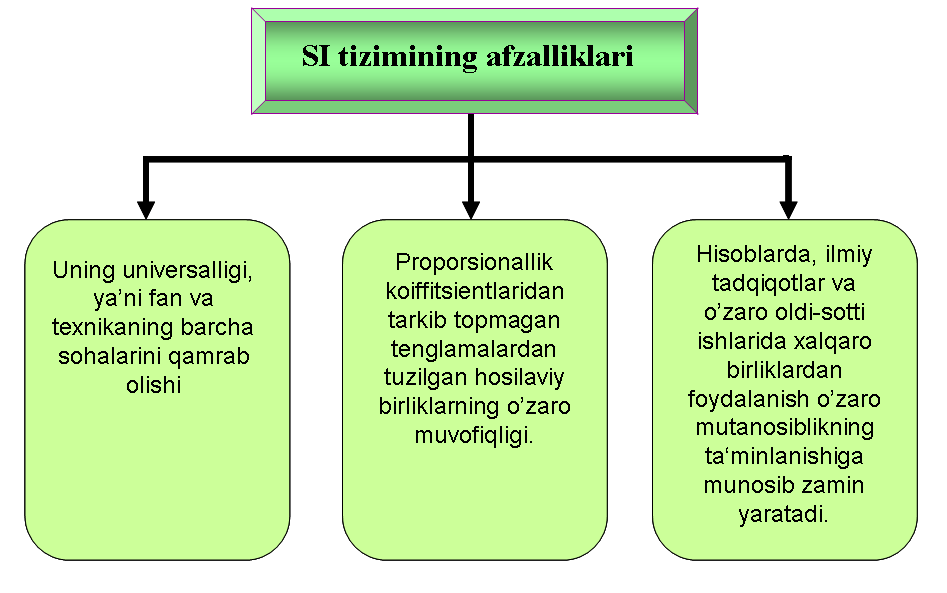

Xalqaro birliklar tizimi
Kattaliklar birliklar tizimi – bu berilgan kattaliklar tizimi uchun qabul qilingan
prinsiplarga muvofiq tuzilgan kattaliklarning asosiy va hosilaviy birliklari tizimidir.
XIX asr oxiri va XX asr boshida SGS, MTS, MKSA, MKKGS kabi bir necha xil birliklar tizimlari paydo
bo‘ldi va amalda ulardan foydalanila boshlandi.Xalqaro miqiyosda qabul qilingan birliklar tizimlari soni
ko‘payib, ayni bir kattalikka tegishli qiymatni turli tizimlarda turlicha ifodalashga, kattalikni o‘zini
esa har xil ta’riflashga to‘gʻri kelar edi. Bundan tashqari amalda ko‘p qo‘llaniladigan, lekin
tizimlashmagan nostandart birliklar, hamda ko‘plab davlatlarda mahalliy ijtimoiy tuzumda uzoq asrlardan
beri muqim o‘rnashib qolgan milliy birliklarning ham amaliy ahamiyati yuqoriligicha qolgan bo‘lib, bu
holat hisoblashlarda, xalqaro savdo munosabatlarida va ilmiy natijalarni ifodalashda bir qancha
murakkabliklarni keltirib chiqarar edi. Xususan, biror birlikni bir tizimdan ikkinchi tizimga
o‘tkazishda kattaliklar qiymatlarining oldiga o‘tkazish koefitsientlarini qo‘yish, bir qancha matematik
amallarni qo‘shimcha bajarishga majbur bo‘linardi. Natijada, fizik kattaliklarning metrik tizimiga
asoslangan yagona xalqaro tizimini ishlab chiqish va dunyo miqiyosida joriy etish, kun tartidagi dolzarb
masalaga aylandi. Bu tizimga qo‘yiladigan asosiy talablarga binoan, qabul qilinishi lozim bo‘lgan yangi
tizim, amaldagi barcha tarqoq xalqaro birliklar tizimlarining va tizimlashmagan nostandart birliklarning
o‘rnini butunlay bosa olishi hamda, amaliy foydalanishga qulay bo‘lishi shart edi. 1948 yilgi IX -
O‘lchov va Tarozilar Bosh Konferensiyasiga Xalqaro Amaliy va Nazariy Fizika Ittifoqining rasmiy
murojaatnomasi kelib tushdi. Unda fizik kattaliklarning yagona xalqaro standartlashtirilgan tizimini
qabul qilsih masalasi ko‘ndalang qo‘yilgan edi.
Fizik kattaliklarning yagona xalqaro tizimini ishlab chiqish zaruriyatini zamonning o‘zi taqozo
qilayotgan edi. XX asrning o‘rtaliriga kelib yuz bergan jahon fan-texnika inqilobi, xalqaro savdo
hajmining ortishi va davlatlararo iqtisodiy munosabatlar ko‘lamining kengayishi turli birliklar
tizimlari orasidagi nisbatlarda kelib chiqishi ehtimolligi yuqori bo‘lgan chalkashliklarni imkon qadar
bartaraf etish zaruriyatini paydo qildi.
O‘lchov va Tarozilar Xalaqaro Konferensiyasi yuqorida qayd etilgan omillarni e’tiborga olib, O‘lchov va
Tarozilar Xalqaro Qo‘mitasiga (O‘TXQ) turli mamakatlarning ilmiy, pedagogik va texnik doiralarining fikr
va takliflarini o‘rganib chiqish asosida, Metr Konvensiyasiga a’zo bo‘lgan davlatlar orasida qabul
qilinishi mumkin bo‘lgan yagona xalqaro birliklar tizimini ishlab chiqish bo‘yicha tavsiyalar tayyorlash
vazifasini topshirdi. 1954 yilda X – O‘lchov va Tarozilar Bosh Konferensiyasida uzunlik va masofa uchun
– metr, vaqt uchun – soniya, massa uchun – kilogram, harorat uchun – Kelvin gradusi, yorugʻlik kuchi
uchun esa – Kandela (sham), tok kuchi uchun – amper birliklari asos qilib olingan xalqaro tizimni qabul
qildi. Mohiyatan bu tizim MKSA tizimining aynan o‘zi edi.
Tarkibi O‘lchov va Tarozolar Xalqaro Idorasi direktori va O‘TXKning 7 a’zosidan iborat bo‘lgan, akademik
Burdun raisligidagi maxsus hay’at tuzildi. Hay’at 1954 – 1964 yillar davomida, ya’ni 10 yil faoliyat
olib bordi va u quyidagi ishlarni amalga oshirdi:
1956 yilgacha yagona birliklar tizimining loyihasini ishlab chiqdi va unga Xalqaro Birliklar Tizimi
(Systeme International; SI) nomini berdi;
1958 yilda karrali va ulushli birliklarning hosil qilish qoidalarini aniqladi;
1960 yilda yagona xalqaro birliklar tizimi loyihasi O‘TXQ tomonidan ma’qullandi va uning asosidagi ilmiy
hisobot ma’ruza XI − O‘lchov va Tarozilar Xalqaro Konferensiaysiga taqdim etildi;
1964 yildagi XII O‘TXKga birliklar bo‘yicha: litrni 1 kub detsimetrga (aniq) tenglashtirish va harorat
intervallari haqidagi qator takliflarni kiritdi.
1960 yilda O‘TXKning navbatdagi, XI bosh konferensiaysi bo‘lib o‘tdi va u xalqaro hay’at tavsiya etgan
yagona birliklar tizimining Xalqaro Birliklar Tizimi (qisqacha SI) loyihasini tasdiqladi. Bu tasdiqqa
ko‘ra SI tizimi 6 ta asosiy (uzunlik, massa, vaqt, harorat, tok kuchi, yorugʻlik kuchi) va ikkita
qo‘shimcha (yassi burchak va fazoviy burchak) kattalikni va ularga muvofiq ravishda oltita asosiy (metr,
kilogramm, soniya, Kelvin, Amper, Kandela) va ikkita qo‘shimcha (radian va steradian) birliklarni qabul
qildi.
1971 yilning oktaybr oyida bo‘lib o‘tgan XIV O‘lchov va Tarozilar Bosh Konferensiaysi molekulyar fizika,
kimyo, kmyoviy texnologiyalar hamda termodinamika sohalarida keng tarqalgan modda miqdori birligi –
molni va uning hosilaviy birliklarini SI ning 7-asosiy birligi sifatida rasmanqabul qildi. Shuningdek bu
konferensiyaning qarorlariga ko‘ra bosim birligi uchun «nyuton taqsim metr kvadrat» (N/m2)o‘rniga yangi,
maxsus nom – Paskal va elektr o‘tkazuvchanlik uchun «minus birinchi darajali Om» (Om−1) o‘rniga yangi,
maxsus nom Simens tasdiqlandi.
1983 yilgi XVII Bosh Konferensiyada metr uchun avvalgi Kripton-86 atomining ionlanuvchi nurlanishiga
asoslangan ta’rifi bekor qilinib, o‘rniga aniq fizik doimiy deb qabul qilingan kattalik – yorugʻlik
tezligi asosidagi yangi ta’rifi qabul qilindi.
XX asrning 80-yillariga kelib SI xalqaro miqyosda turli davlatlar va xalqaro tashkilotlar tomonidan
asosiy tizim sifatida birin-ketin rasman qabul qilina boshladi. Jumladan, 1974 yilga kelib, Avstriya,
Bolgariya, Germaniya, Italiya, Kanada, Sobiq Ittifoq, Fransiya, Chexoslovkiya, Shvetsiya va boshqalar
ixtiyoriy yoki majburiy ko‘rinishlarda o‘zlarida joriy etdilar. Xalqaro Standartlashtirish Tashkiloti
(ISO) SI ni o‘zining asosiy foydalanish hujjati sifatida MS ISO−31 asosida rasman qabul qildi. Xalqaro
Metrlogiya Qonunchiligi Tashkiloti o‘z tarkibidagi a’zo davlatlarga SI ni qonuniy tartibda joriy qilish
va nazorat – o‘lchov asboblarini ham SI asosida sozlash bo‘yicha tavsiyalar berdi. BMTning fan, ta’lim
va madaniyat ishlari bo‘yicha xalqaro tashkiloti – YUNESKO barcha a’zo mamlakatlarni Xalqaro Birliklar
Tizimini qabul qilishga chaqirdi.
SI tizimi mamlakatimizda 1982 yildan boshlab joriy etila boshlangan va o‘ziga xos afzalliklarga ega (12-
rasm). 2004 yilda kattalik biliklariga oid O‘z DSt 8.012:2004 “O‘zbekiston Respublikasining o‘lchashlar
birliligani ta’minlash davlat tizimi. Kattaliklar birliklari” standarti qabul qilingan:
